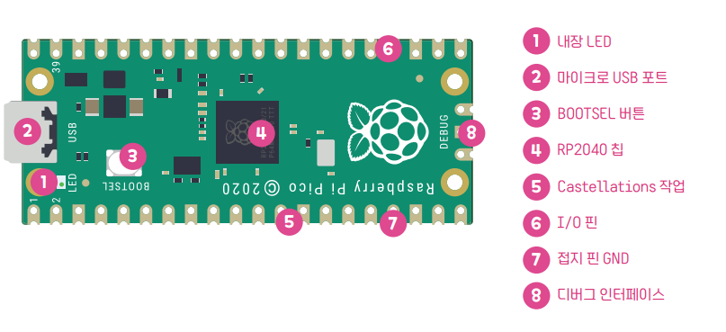

Chapter 1. 하드웨어 및 환경 구축
1.1 차세대 마이크로컨트롤러 RP2350 칩셋 스펙

Pico 보드 설명 (Raspberry Pi 공식 제공)
Pico 2 WH의 심장은 라즈베리 파이 재단이 직접 설계한 차세대 고성능 마이크로컨트롤러 RP2350 칩셋입니다. 이전 세대인 RP2040에 비해 프로세서 아키텍처가 대폭 업그레이드되었으며, 연산 속도와 메모리 효율, 그리고 IoT 보안 기술인 Arm TrustZone-M이 탑재되어 더욱 강력하고 안전한 프로젝트 환경을 제공합니다.
| 항목 (Specification) | 이전 세대 (RP2040) | 차세대 프로세서 (RP2350) |
|---|---|---|
| 코어 아키텍처 (CPU) | Dual Arm Cortex-M0+ | Dual Arm Cortex-M33 (또는 Dual Hazard3 RISC-V 코어 선택 가능) |
| 기본 클럭 속도 (Clock) | 133 MHz | 150 MHz (약 1.5배 연산 성능 향상) |
| 부동소수점 연산 (FPU) | 하드웨어 FPU 미탑재 (소프트웨어 처리) | 하드웨어 부동소수점 연산 장치(FPU) 탑재 |
| 내부 RAM (SRAM) | 264 KB | 520 KB (데이터 적재 공간 약 2배 확장) |
| 하드웨어 보안 (Security) | 기본적인 보안 기능 없음 | Arm TrustZone-M 하드웨어 보안 기술 안전 부팅(Secure Boot) 지원 |
| 저전력 모드 효율 | 일반 저전력 상태 지원 | 초저전력 상태에서의 전류 소모 대폭 감소 (배터리 효율 상승) |
| PIO (Programmable I/O) | 2개 블록 (총 8개 상태 머신) | 3개 블록 (총 12개 상태 머신)으로 커스텀 인터페이스 확장성 강화 |
1.2 하드웨어 제어의 핵심: 핀 배열(Pinout)
센서와 모터 등 외부 부품을 연결하려면 보드 양쪽에 일렬로 늘어선 40개의 금속 핀(다리)들의 역할을 정확히 알아야 합니다. 아래의 핀맵(Pinout) 다이어그램은 앞으로 하드웨어 조립 시 가장 많이 참고하게 될 핵심 지도입니다.

Pico 시리즈 공식 핀 배열도 (Raspberry Pi 공식 제공)
💡 내가 가진 보드가 Pico 2 WH 라면?
보드 이름 뒤에 붙은 'H'는 Header(헤더 핀)의 약자입니다. 공장에서부터 금속 다리(핀)가 완벽하게 납땜되어 출고된 제품이므로, 별도의 인두기 납땜 작업 없이 곧바로 브레드보드(빵판)에 꽂아서 다양한 센서 실습을 시작할 수 있습니다.
📌 초보자가 반드시 알아야 할 4가지 핵심 핀
40개의 핀을 당장 모두 외울 필요는 없습니다. 색상별로 구분된 아래의 4가지 역할만 이해하면 대부분의 부품을 연결할 수 있습니다.
| 핀 이름 (색상) | 역할 및 설명 |
|---|---|
| GPIO (연두색) GP0 ~ GP28 |
General Purpose Input/Output (범용 입출력) 우리가 직접 코딩으로 제어하는 다리입니다. LED에 전기를 보내 켜게 하거나(출력), 버튼이 눌렸는지 신호를 읽어오는(입력) 역할을 합니다. |
| GND (검은색) Ground |
접지 (전기의 마이너스 극) 전기는 반드시 나간 곳으로 돌아와야 흐릅니다. 보드에서 출발한 전기가 센서를 거쳐 다시 보드로 돌아오는 '도착점' 역할을 합니다. 8개의 다리가 배치되어 있습니다. |
| 3V3(OUT) (빨간색) 3.3V 전원 출력 |
부품에 전원 공급 (전기의 플러스 극) 보드가 USB로부터 전기를 받아서, 외부 센서나 디스플레이가 작동할 수 있도록 3.3V의 일정한 전기를 내어주는 다리입니다. 36번 핀 하나뿐입니다. |
| ADC (진한 초록색) 아날로그 입력 |
연속적인 값 읽기 버튼처럼 켜짐/꺼짐(1/0)만 있는 것이 아니라, 온도의 미세한 변화나 빛의 밝기처럼 '연속적인 아날로그 신호'를 숫자로 변환해서 읽어들이는 다리입니다. |
1.3 개발 환경 Thonny IDE 설치 (권장)
하드웨어 다리들의 이름을 알았다면, 이제 보드에 명령(코드)을 써서 전달해 줄 번역기 프로그램이 필요합니다. 처음 입문할 때는 초보자 친화적인 Thonny(토니) 에디터 사용을 적극 권장합니다.
💻 Thonny 다운로드 및 설치 방법
- 공식 웹사이트인 thonny.org에 접속합니다.
- 화면 우측 상단의 Windows 글자를 클릭하여 설치 파일(exe)을 다운로드합니다.
- 다운로드된 파일을 실행하고, 특별한 설정 변경 없이 [Next]를 눌러 설치를 완료합니다.
1.4 고급 개발 환경: VS Code 구축 (선택 사항)
Thonny에 익숙해졌거나 더 강력한 코드 자동 완성 및 프로젝트 관리가 필요하다면, 실무 IoT 개발자들이 주로 사용하는 Visual Studio Code (VS Code)로 환경을 구성할 수 있습니다.
[1단계] 필수 소프트웨어 설치
- VS Code: 공식 홈페이지에서 다운로드 후 설치합니다.
- Python: PC에 파이썬이 설치되어 있어야 합니다. (설치 시 반드시
Add Python to PATH옵션을 체크하세요!)
[2단계] 핵심 확장 프로그램(Extension) 설치
VS Code 좌측 메뉴의 Extensions(확장, Ctrl+Shift+X) 아이콘을 클릭하고 검색창에 아래 두 가지를 검색하여 설치합니다.
- Python: Microsoft에서 제공하는 공식 파이썬 확장 프로그램
- MicroPico: (구 Pico-W-Go) Pico 보드와 VS Code를 완벽하게 연결해 주는 필수 확장 프로그램
[3단계] 프로젝트 초기화 및 통신 포트 연결
- 마이크로 5핀 케이블로 Pico 2 보드를 PC에 연결합니다.
- VS Code에서 코드를 저장할 새로운 빈 폴더(예:
Pico_Project)를 생성하고 엽니다 (File > Open Folder). - 단축키
F1또는Ctrl + Shift + P를 눌러 Command Palette(명령 팔레트)를 띄웁니다. - 검색창에
MicroPico: Configure project를 입력하고 엔터를 누릅니다. (자동으로.vscode폴더가 생성되며 마이크로파이썬 전용 공간으로 세팅됩니다.) - VS Code 하단 파란색 상태 표시줄의
Pico Disconnected를 클릭하고, Pico의 포트(예:COM3)를 선택하여Pico Connected상태로 만듭니다.
VS Code와 Thonny의 결정적 차이점 (주의!)
Thonny는 저장 버튼을 누르면 보드 내부에 코드가 바로 저장되지만, VS Code는 기본적으로 PC 하드디스크에 파일을 저장합니다. 따라서 하단 상태 표시줄의 MicroPico 전용 버튼을 용도에 맞게 반드시 활용해야 합니다.
- ▶️ Run: 현재 파일을 보드 메모리에 올려 일회성으로 실행해 보는 테스트 버튼
- ⬆️ Upload project to Pico: PC의 파일들을 보드 내부로 영구 복사(업로드)하는 버튼 (전원을 껐다 켜도 실행되게 하려면 필수!)
- ⬇️ Download project from Pico: 보드 내부에 있는 파일을 PC로 백업해 오는 버튼